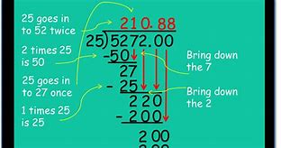
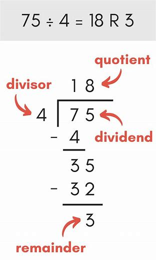

Divide
In Mathematic the four basic arithmetic operations are addition, subtraction multiplication, and division. Based on the problem requirement, the type of arithmetic operation has been chosen. For example, to share 100 chocolates equally among 25 children, we need to divide 100 by 25. Thus, each child will get 4 chocolates. In this article, we are going to discuss one of the arithmetic operations called “Division or Divide” with its symbol, division math formula, division of fractions, decimals, polynomials and so on with many solved examples.

Divide Meaning
The meaning of divide is to separate into two or more equal parts, areas, classes, categories, groups or divisions. In simple words, the meaning of divide is to distribute the whole thing to a group in equal parts or make equal parts. Suppose, a diagonal of a square divides it into two triangles of equal area. The result of a division operation may or may not be an integer. Sometimes, the result will be in the form of decimal numbers.
Divide Symbol
The symbol used to represent divide or division is ÷, slash (/) or a horizontal line ( _ ). These symbols are used conveniently while dealing with various types of problems and calculations. Also, x/y or x ÷ y can be read as “x by y” or “x over y”. For example, the division of 60 by 5 can be expressed as follows:
60 ÷ 5 = 12
60/5 = 12
Division Math Formula
The four important terms used in the division operation are dividend, divisor, quotient and remainder. The formula to calculate the division of two numbers is:
Dividend ÷ Divisor = Quotient + Remainder.
Here,
* The dividend is the number, which is being divided
* The divisor is the number, which divides the number (dividend) into equal parts
* The quotient is the result of the division operation
The remainder is the leftover number in the division operation.
For example, 46/5
Here,
46 is the dividend
5 is the divisor
If 46 is divided by 5, we get the quotient as 9 and the remainder 1.

Division Problems
We know that division is one of the primary arithmetic operations in maths. This is used in solving and simplifying various types of sums and expressions. Below are a few sums with solutions that involve division operation.
Divide 375 by 5:
375/5 = 75
Divide 226 by 4:
226/4 = 56.2
Divide 784 by 14:
784/14 = 56
Also, go through the division sums which include various types of numbers and expressions.
Divide Fractions
We can also perform division operations on fractions. While dividing fractions, the division operator needs to be converted into multiplication. This can be understood in a better way using the example given below:
Divide 2/3 by 4/5:
Numerator = ⅔
Denominator = ⅘
Thus, (⅔)/ (⅘)
This can be written as:
(2/3) × (5/4) = (1/3) × (5/2) = 5/6 Therefore, (⅔)/ (⅘) = 5/6DIVISION OF TWO NUMBERS
View Result: